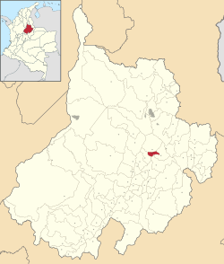
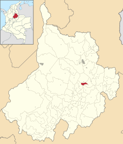

Jordán es un municipio de Colombia, situado en el departamento de Santander, en la provincia de Guanentá, a 80 km de Bucaramanga, la capital departamental, y a 320 de Bogotá, la capital del país. Se encuentra ubicado en el Cañón del río Chicamocha (Cañón del Chicamocha), exactamente en el margen sur del río. Es posible acceder por carretera desde el municipio de Villanueva (Santander), y a pie desde Los Santos (Santander). El municipio posee el casco urbano menos poblado de Colombia con tan solo 54 personas habitando en este.
Política
En 2019 se destacó al estar entre los 10 municipios con menor abstencionismo electoral, quedando en el primer lugar para la elección de alcalde, gobernador departamental y concejales municipales con una participación del 94,47%, 94,71% y 94,71% de los potenciales sufragantes en los comicios respectivamente y en el cuarto lugar para la elección de diputados departamentales al participar el 91,91% del censo.3
Turismo
El principal atractivo turístico del municipio es el camino empedrado que conduce desde el casco urbano hasta el municipio de Los Santos . Además del atractivo en si que representa el camino, el paisaje del Cañón del Chicamocha es otro gran atractivo turístico, y al llegar al pueblo es posible refrescarse en las frías aguas del río Chicamocha, el cual se halla fácilmente accesible a unos cuantos metros del casco urbano del pueblo. Finalmente, en la vía que comunica a Jordán con el municipio de Villanueva , en el sector de Montegrande, se encuentra la cascada Montegrande, una caída de aguas de.
#/media/Archivo:Bandera_de_Jordan_Santander.png) 

#/media/Archivo:Colombia_-_Santander_-_Jord%C3%A1n.svg){kind=link}
Mas Info: google maps